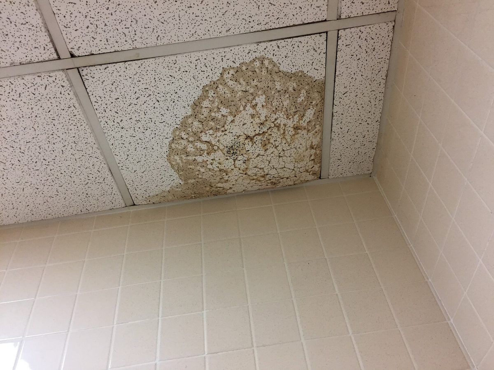
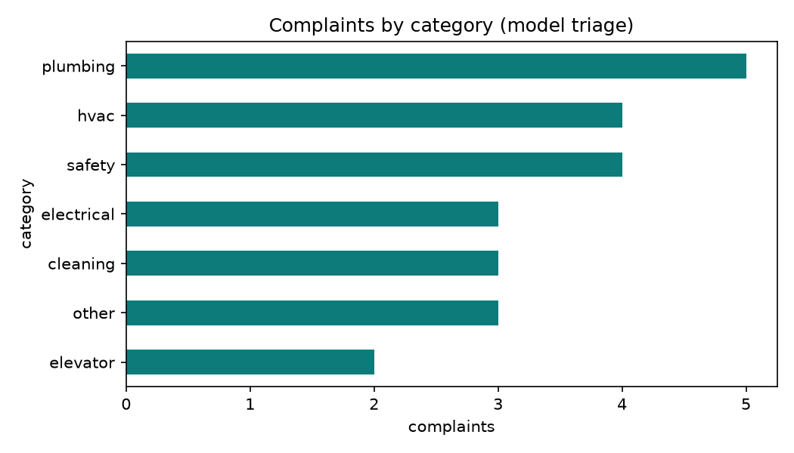
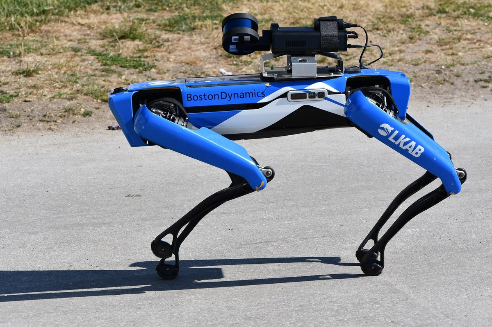
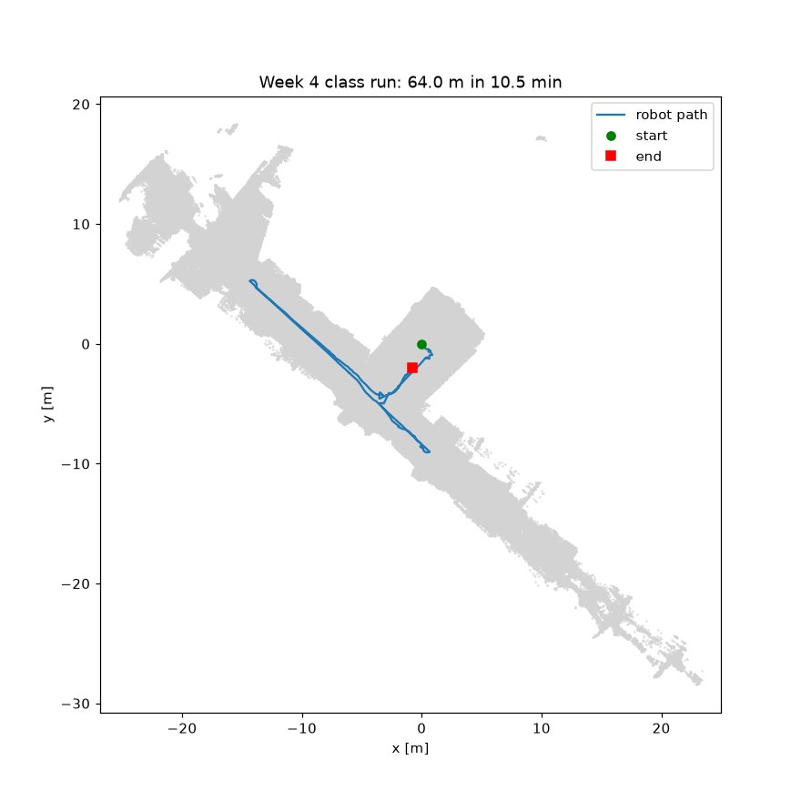

Get ready: a new project and the data
Make a new uv project for the final and add the libraries for both exercises in one go. Ollama and the gemma3:4b model are already installed from Week 9.
uv init --python 3.12 --no-package facility-final
cd facility-final
uv add ollama pydantic pandas matplotlib numpy open3d
ollama listYou should see gemma3:4b in the ollama list output; if not, run ollama pull gemma3:4b. Then click Download final data at the top and unzip it inside facility-final, so you get a data folder like this:
| data/complaints_final.csv | 50 synthetic complaints. The category and priority columns are empty; you fill them in Exercise 1. |
| data/route_final.csv | A simulated inspection run (about 4 min), made on the real lidar map of the Week 4 building. Same columns as the Week 4 robot_trajectory.csv. Used in Exercise 2. |
| data/lidar_map.ply | The same lidar map of the building as in Week 4 (520k points). Used in Exercise 2. |
| data/README.md | What every column means. |
You may use AI tools such as ChatGPT, Claude, Gemini or Copilot to write code and fix errors. One condition:
- The complaint triage must be done by your module with the Ollama model on your laptop. Do not paste the complaints into an online chatbot to get the answers, and do not fill them in by hand.
Exercise 1: triage 50 complaints with an LLM
Every day a facility team receives complaints by KakaoTalk, web form and phone. Someone has to read each one and decide the category (which trade should go?) and the priority (how urgent is it?). Make the LLM on your laptop do that job.


Write a new Python module, triage_final.py. It must:
- Read
data/complaints_final.csv. - Send only the
textof each complaint to an LLM in Ollama and get back a category and a priority. Hide phone numbers before sending (F49 contains a fake one). - Use only these values:
category: plumbing, hvac, electrical, cleaning, safety, elevator, otherpriority: urgent, high, normal, low
- Save
complaints_final_filled.csv: the same 50 rows and columns, with the two empty columns filled in. - Draw a bar chart of complaints per category and save it as
triage_by_category.png.
Reference: triage.py in Week 9, Step 2. It has everything you need: the prompt, the JSON format with pydantic, phone masking and the bar chart. Don't copy it as is; understand what each part does and why, then build your own module.
uv run triage_final.pyIf you see TypeError: Invalid value 'plumbing' for dtype 'float64', pandas read the empty columns as number columns. Read the file like this: pd.read_csv("data/complaints_final.csv", dtype=str)
Files to submit for Exercise 1:
| triage_final.py | your module |
| complaints_final_filled.csv | the 50 complaints with category and priority filled in |
| triage_by_category.png | the bar chart of complaints per category |
Exercise 2: draw the robot's inspection route on the map
An inspection robot records its own position about every 0.1 s while it drives. A facility manager's first question is: where did the robot go, how far, and for how long? Answer it for a new inspection run in the same building as Week 4, by drawing the route on the map.


Write a new Python module, route_final.py. It must:
- Read
data/route_final.csvanddata/lidar_map.ply. - Calculate and print the number of recorded positions, the duration (min), the distance driven (m) and the average speed (m/s).
- Draw the top view: the lidar map as grey points, the robot's path as a line on top, the start in green and the end in red. Use equal axes (
axis("equal")), axis labels in metres and a legend, and put the distance and duration in the title. - Save the figure as
route_map.png.
Reference: first_look.py in Week 4, Step 6, "First look: where did the robot go?". It shows how to calculate the distance, read the point cloud and draw the top view. The end point marker is not in the class code; add it yourself.
uv run route_final.pyThe route should stay inside the same corridors as Week 4, and the run lasts about 4 minutes. If the route lands outside the map or the numbers look odd, check the column names (x_m, y_m, t_s) and units.
Files to submit for Exercise 2:
| route_final.py | your module |
| route_map.png | the map with the route, start and end |
Submit: one zip file by email
Make a folder named final_ plus your student number (for example final_2026123456) and put the five files in it, with exactly these names and places. Do not include the data folder or .venv.
final_2026123456/
├── exercise1/
│ ├── triage_final.py
│ ├── complaints_final_filled.csv
│ └── triage_by_category.png
└── exercise2/
├── route_final.py
└── route_map.png- Zip the folder:
final_2026123456.zip(Windows: right-click the folder → Compress to ZIP; macOS: right-click → Compress). - Email the zip as an attachment to mugojames254@skku.edu by Fri 11 Dec 2026, 23:59.
- Email subject:
[Final] student-number name(for example[Final] 2026123456 Njoroge James Mugo). Put your name and student number in the body too.
- Open
complaints_final_filled.csvand check that all 50 rows have acategoryand apriority. - Check that both images open and that the map shows the start and end points.
- Check that the file names are exactly as above; grading looks for these names.
- Exercise 1: the accuracy of your category and priority against the facility team's answers, the chart, and whether your module runs.
- Exercise 2: the map (route, start, end, axes, legend, title), whether the distance and duration in the title are right, and whether your module runs.